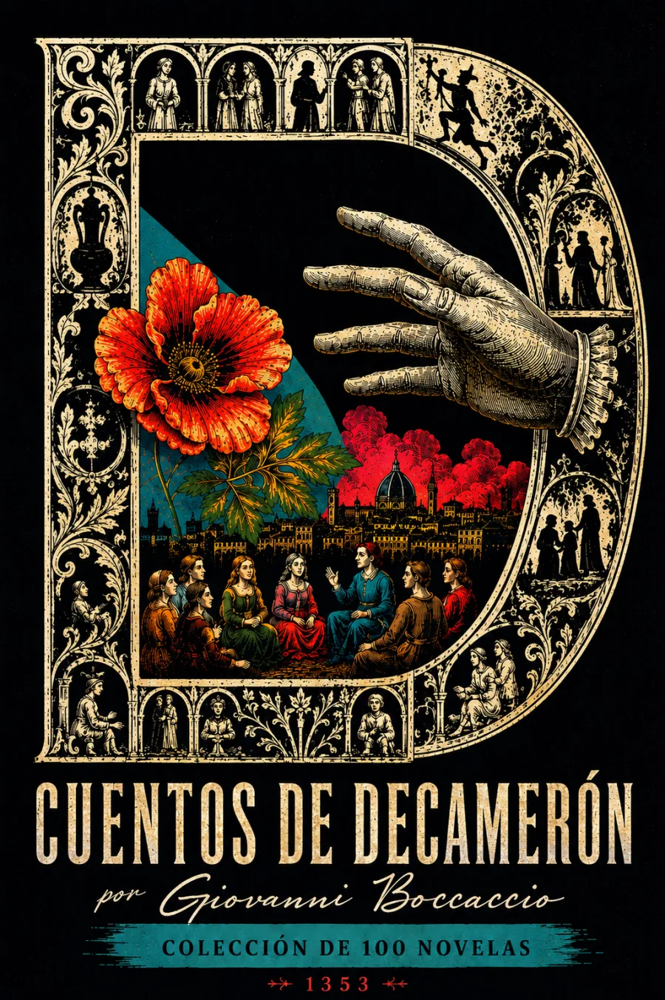

Escucha ahora
SINOPSIS
Selección de relatos del Decamerón de Giovanni Boccaccio, cien cuentos narrados por diez jóvenes florentinos refugiados en una villa de las afueras durante la peste negra de 1348. Con su mezcla de comedia, erotismo, astucia y crítica social y eclesiástica, la obra fue una de las fuentes narrativas más influyentes del Renacimiento europeo y dejó huella directa en autores españoles como Juan de Timoneda y Cervantes.
CAPÍTULOS
La fuga de Florencia: diez jóvenes huyen de la peste
El pacto: un cuento cada uno, cada noche, durante diez días
Ser Ciappelletto y la falsa confesión
Federigo degli Alberighi y el halcón
El regreso a Florencia y el cierre del relato
RESEÑAS

Bueno